This week, I really wanted to experiment with serial communication because I believe it is a crucial skill that is particularly relevant to my SmartCleat final project idea. Knowing how to configure and optimize serial communication ensures that devices can send and receive data with minimal delay. This is key for sensor data collection or controlling actuators within the SmartCleat.
To experiment with this idea, I decided to play with a neopixel and try to have it communicate with an ultrasonic distance sensor.
My project objectives for this week were to
(1) Learn to manipulate a Neopixel strip to control multiple RGB LEDs using just one data pin on my Arduino.
(2) Introduce serial communication using the UART protocol to connect my Neopixel strip with an ultrasonic distance sensor.
I started by doing some background research on serializing data so I could better understand it before executing this project.
What I learned is that combinatory circuits don’t have memory – meaning outputs depend only on the current inputs, not previous ones. However, memory is often crucial, so to solve this, electrical engineers created combinatory circuits with feedback to remember the state of a signal. This creates registers, which are the basic memory units in computers. Circuits with memory are called sequential circuits because their outputs depend on both current and past inputs.
One important sequential circuit I learned about for serial communication was the shift register. I started by learning about the 74HC595 shift register, although I didn’t end up using it, to develop my knowledge base on how these chips work. What the 74HC595 chip does is expand the number of digital outputs on your Arduino by adding 8 extra outputs per chip. You can even add more outputs by chaining multiple chips together to control even more outputs.
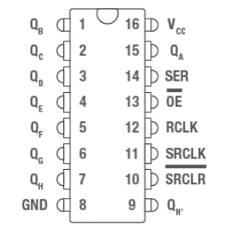The chair analogy was very helpful to me in learning how this technology works. Imagine the 74HC595 is a row of 8 chairs, each either empty (0) or occupied (1). Every time a clock rings, everyone moves one chair to the right, with the rightmost person existing, and a new person enters the leftmost chair or it remains empty. This shift action helps us manage data movement in the register. After shifting data into the register, we then use another signal to update the outputs. Essentially, when the clock pin goes HIGH, all values shift to the right, and new data is added.
This is what I now understand to be basic serial communication, which sends data one bit at a time compared to parallel communication, where all bits are sent simultaneously!
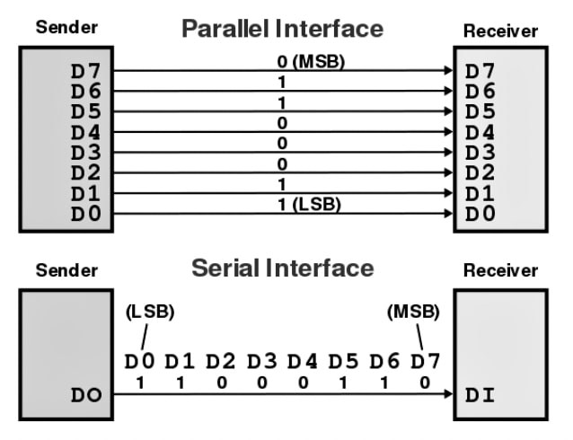Neopixels utilize a similar concept to shift registers. Each Neopixel contains an RGB LED, a driver, and a communication module. The RGB data is sent bit-by-bit through a data pin, and Neopixels can be chained together to control many LEDs using just one Arduino pin.
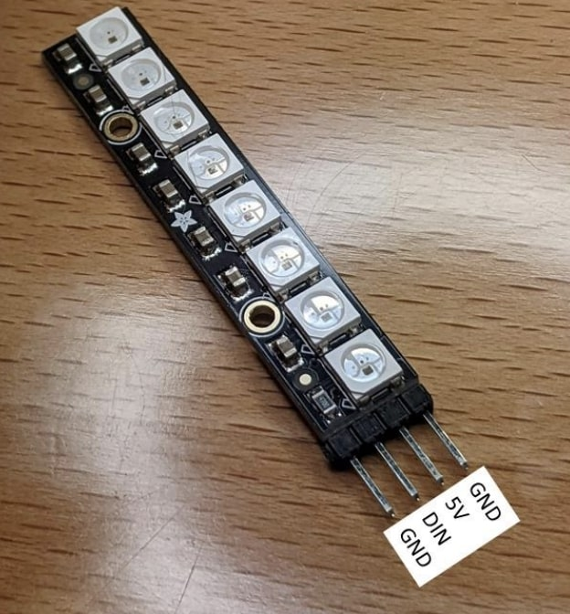Neopixels require 5V logic, so we have to use a level-shifting IC, the 74AHCT125, to handle the voltage difference. You connect the IC to power, ground, and select a channel for data transmission.
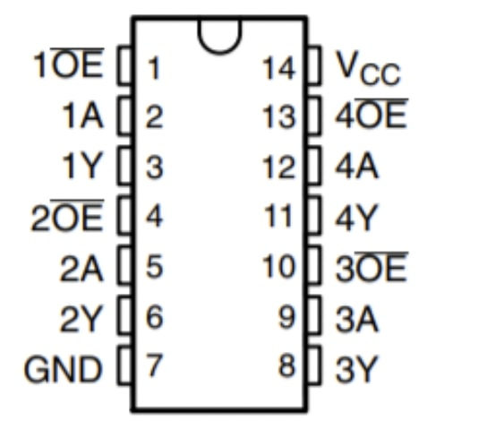When researching example Arduino projects involving serial communication, I kept coming across the same couple of serial protocols: UART, SPI, and I2C. I chose to use UART for my project because unlike the other two, it doesn’t use a clock signal. The devices just have to agree on the transmission speed, or baud rate.
I chose to use the US-100 ultrasonic distance sensor in serial communication mode. The Arduino and sensor will communicate over UART which sends data bit-by-bit without a clock signal. To initiate communication, the Arduino sends a signal to the sensor using the command `Serial1.write()`, which sends data at the agreed baud rate. The sensor responds with a 16-bit distance measurement, which the Arduino reads.
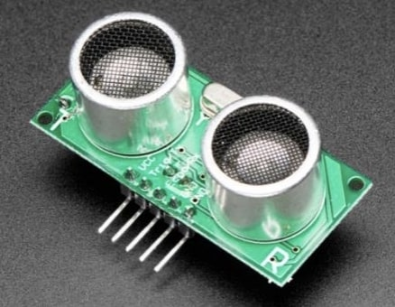My main goal after solidifying my knowledge on how to control the Neopixel was to get the Neopixel lights to change with different distance measurements taken on the US-100 sensor.
I began by building my circuit to practice controlling the Neopixel. I used these pinouts obtained from online datasheets to inform my circuit design.
I used this connection diagram for the IC quad-level shifter to inform my circuit:
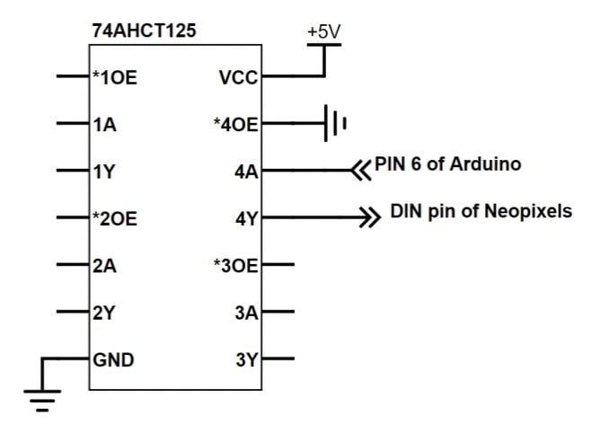This was the final circuit iteration that I created:
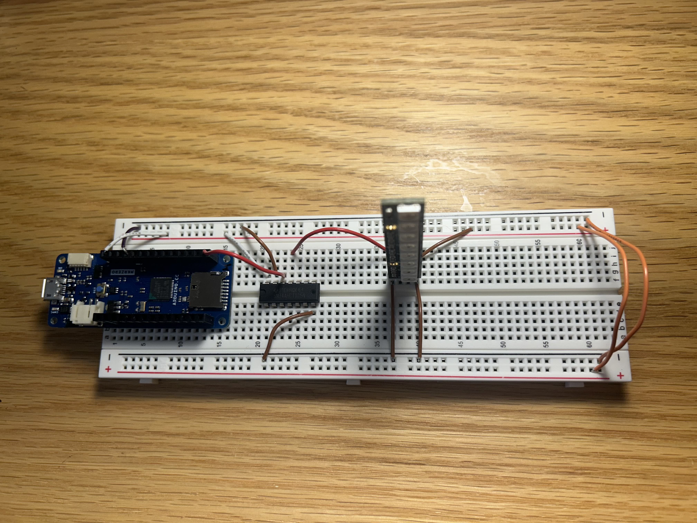I then uploaded code that I slightly modified from an existing library called "strandtest.ino" that I thought provided a good starting point for my understanding.
This code controls the Neopixel to create various lighting effects. It initializes the strip and sets the brightness, then enters a loop where it displays a sequence of colors, including red, green, and blue. It also features a theater marquee effect, where lights chase across the strip, and a flowing rainbow effect.
Here was the first result of uploading this code to the Arduino:
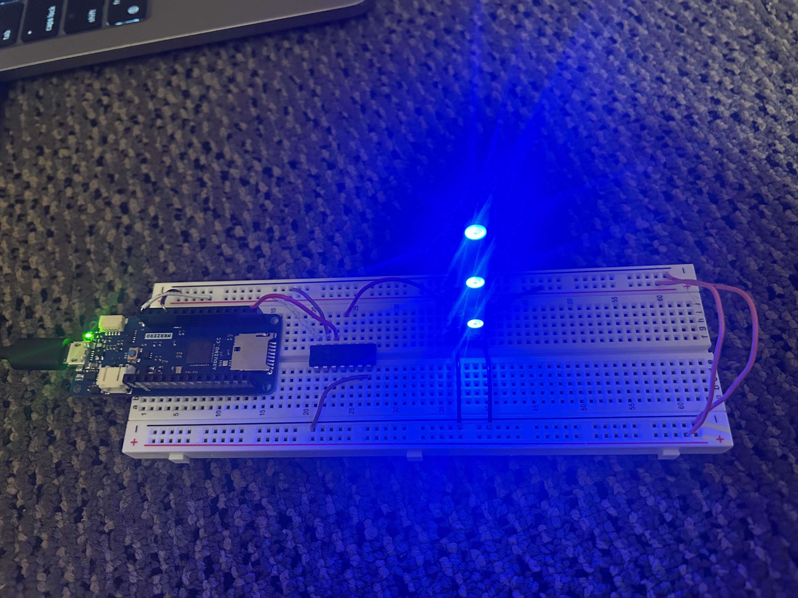I then wrote code for the rainbow marquee-theater effect that I wanted. This was the result:
Here are some videos:
I then wanted to take it up a notch and learn how to create an effect where each pixel lights up in sequence. To do this, I wrote the following code:
What this code does is in the `loop()` function, it lights up one pixel at a time in green, waits for half a second, and then moves to the next pixel. Essentially, what we expect to see is the green light moving from bottom to top, one circle at a time; once it gets to the top, it starts again from the bottom.
I then wanted to experiment with changing different elements of the code and seeing how this would impact my light display. I commented out stick.clear().
Starting with the bottom circle, each circle turns green in order (from bottom to top). However, it stays green until all of the circles are green and then stays like this forever. The reason this happens is because stick.clear() is supposed to turn the light off. If we comment it out, all of the lights stay on forever once they are turned on.
I then wanted to figure out how to change the direction of the sequential lighting. To do this, I changed the initial value of curPixel to 7 instead of 0 so it starts at the top. Then, I changed the increment of curPixel++ to curPixel- - so that it moves down. Finally, I changed the for loop to say that if curPixel < 0, then curPixel = 7 ; this means that once it gets to the bottom, it should start again from the top.
The final aspect of Neopixel control I wanted to experiment with was controlling the amount of pixels that were lit up. To do this, I wrote the following code.
This code sets the color of the Neopixel strip according to the binary representation of that number. Using the specified color, it waits for the delay before repeating the process. The loop function basically calls the showBinary function with a specified color, delay, and number.
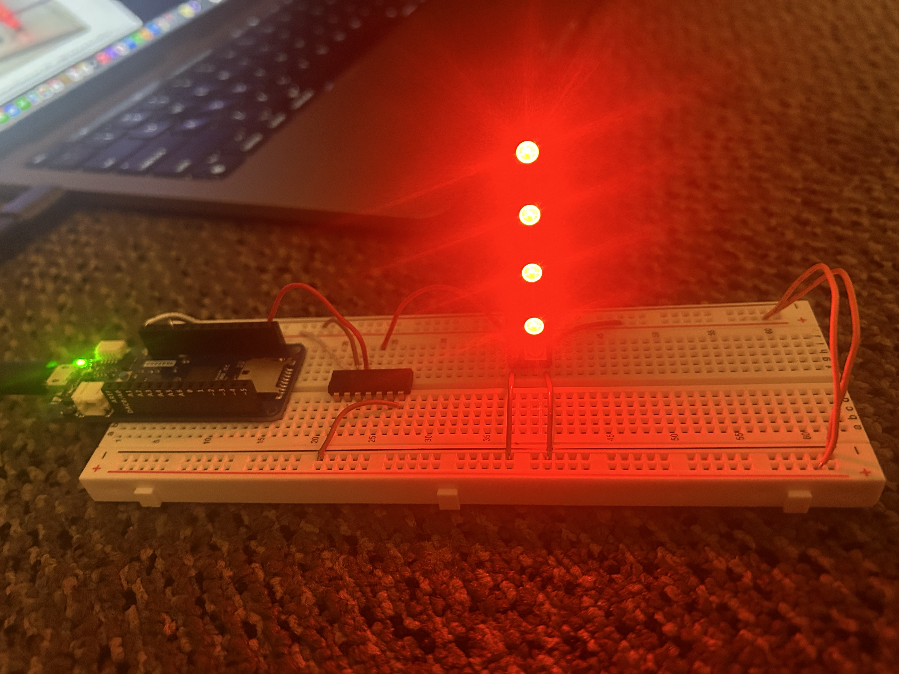When I increased the numberToDisplay from 170 to 250, more of the circles lit up.
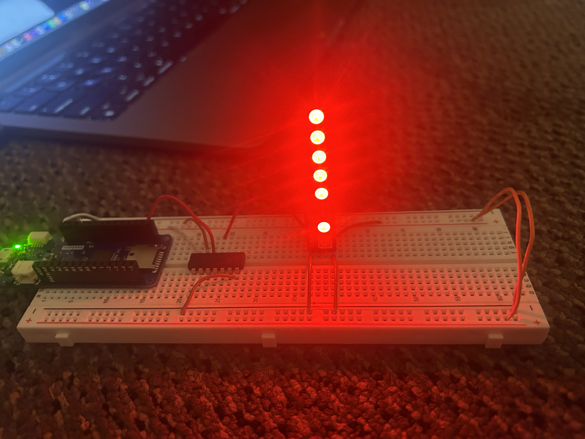When I decreased the numbertoDisplay from 170 to 100), fewer circles lit up.
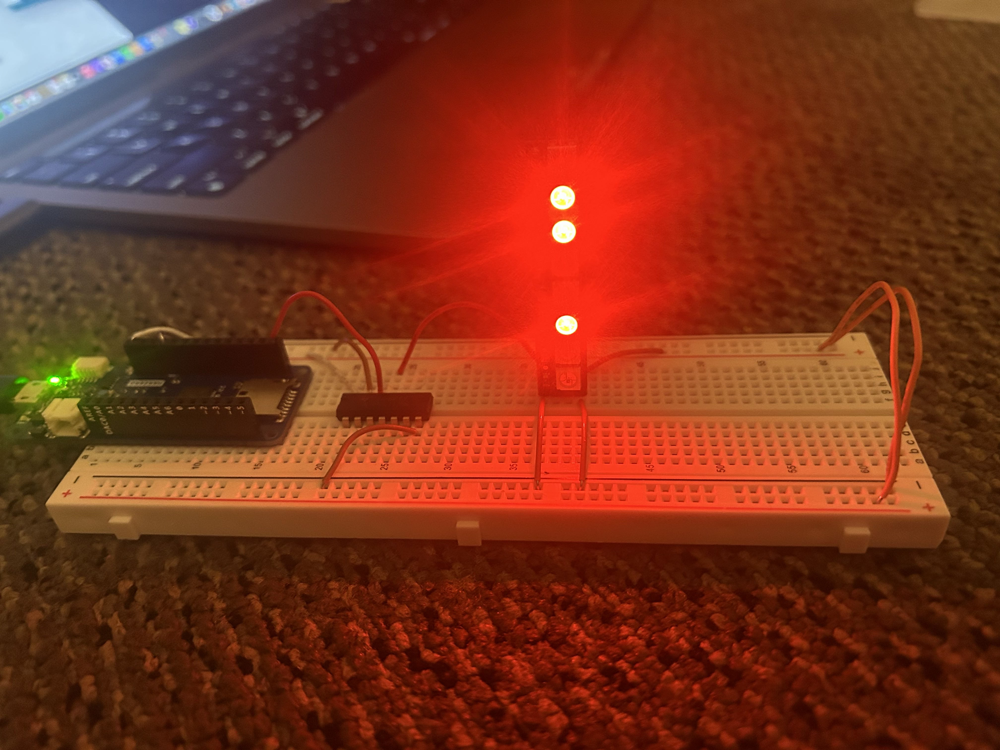I then set byte numberToDisplay = 0 instead of 170 before the loop. Then, in the loop, in showBinary, I put numberToDisplay ++ so that it counted up each time.
Once I found that I had a pretty good grasp of how to control and manipulate the Neopixel through my Arduino code, I felt confident about setting off on my mission to control the neopixel with an ultrasonic distance sensor!
Using the datasheet pinout, I hooked up the US-100 ultrasonic distance sensor to my board quite simply, only requiring the addition of five more connections.
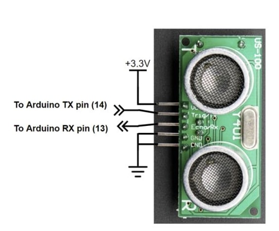This is what my final circuit looked like:
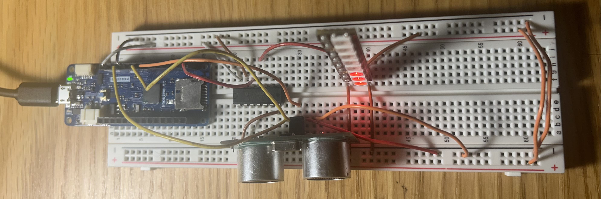I then produced the following code to control my Neopixel based on distance measurements received via UART (Universal Asynchronous Receiver-Transmitter) serial communication.
I began by defining constants for the pin number, the number of LEDs, and the maximum distance to be measured. The bin width is calculated to determine how far each LED represents in terms of distance. An Adafruit NeoPixel object named "stick" is initialized for controlling the LED strip. In the `setup()` function, the primary and secondary serial communications are initiated, the NeoPixel strip is prepared for use, its brightness is set, and a short delay is introduced to stabilize the setup. In the main `loop()` function, the code sends a command (0x55) to request distance data from a sensor. It then waits until two bytes of data are available to read from the UART buffer, combining these bytes into a single 16-bit integer that represents the measured distance. The distance value is printed to the Serial Monitor for debugging. The code then calculates how many LEDs to light based on the distance, ensuring it does not exceed the total number of LEDs. It clears any previous states of the NeoPixels, lights up the appropriate number of LEDs in red, and updates the strip to reflect these changes. Finally, a brief delay is introduced before the loop repeats.
After uploading this code, I was able to visually represent distance measurements using my Neopixel, with each lit LED corresponding to a specific range of distances!
Unfortunately, the problem that I continued running into was that the Neopixel strip was not properly connecting to the breadboard. This led me to have to hold the Neopixel strip down and at a specific angle for it to actually work.
To remedy this, I decided to fix the soldering job on the Neopixel to improve its connection. This is what my circuit looked like after the wires were soldered onto the Neopixel and then added back to my circuit:
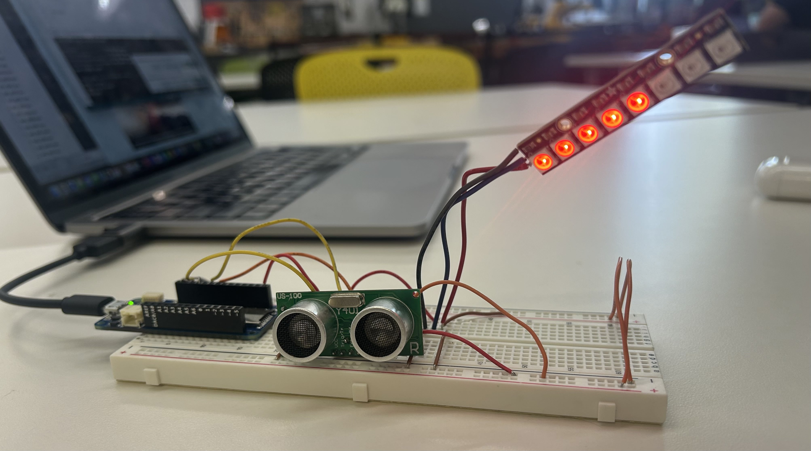I uploaded my code again and found that with the connection to the board now improved through soldering, everything worked so much better! Here is the new and improved video demo: